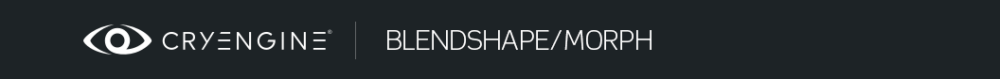
Обзор
Разделы
Теперь этот раздел продолжится частью CRYENGINE, посвященной импорту ваших ресурсов из конвейера 3dsMax или Maya. В этом документе мы объясним, как добавить нового персонажа в движок с помощью Character Tool.
Создание персонажа
Откройте редактор Sandbox из папки CRYENGINE, он будет расположен в:
<Build>\bin\win_x64\Sandbox.exe
Откройте Character Tool:
Tools -> Animation -> Character Tool
На снимке экрана ниже показана левая панель, разделенная на два вертикальных макета. Она активируется с помощью значка, выделенного красной стрелкой, и предоставляет два фильтра просмотра. В ходе работы с этим руководством вы можете установить на нижней панели фильтр «Анимация».
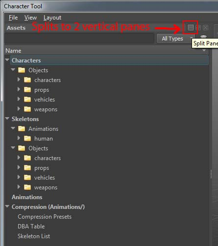
Сначала добавьте новый скелет в SkeletonList:
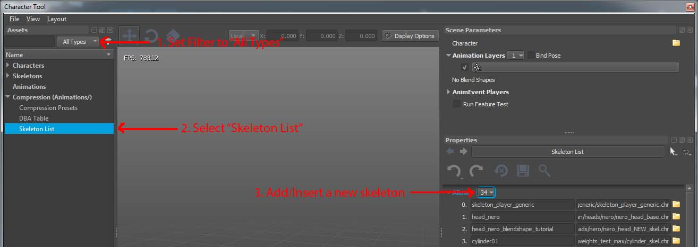
В нижней части списка найдите файл *.CHR, экспортированный из Maya, и дайте ему имя. Нажмите значок сохранения, чтобы сохранить SkeletonList.xml. Вы должны заметить, что звездочка исчезнет («*Список скелетов» снова станет «Списком скелетов»).
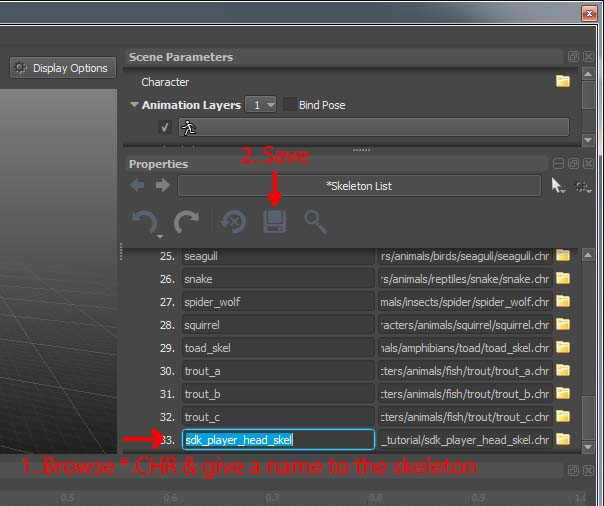
Создайте новый файл *.CDF и дайте символу CRYENGINE подходящее имя:
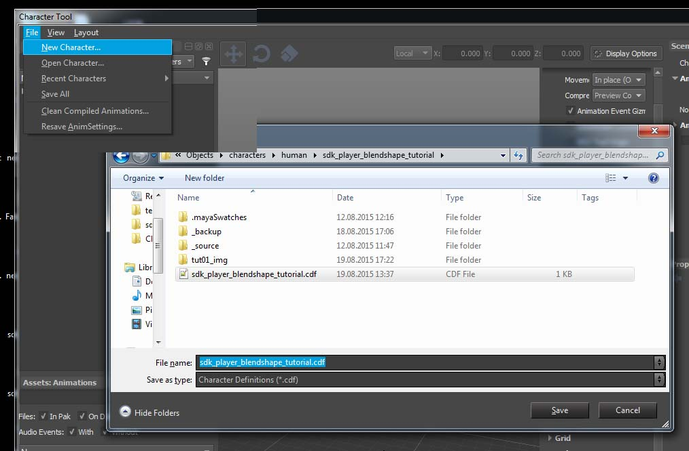
Назначьте экспортированный файл скелета ".CHR" в разделе скелета. Желтые окна с предупреждениями помогут вам исправить то, чего не хватает, чтобы получить правильную настройку персонажа CRYENGINE.
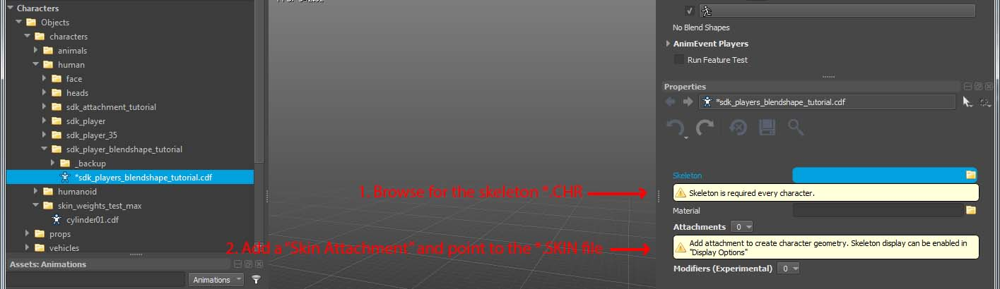
Добавьте вложение скина в файл скелета *.CHR.
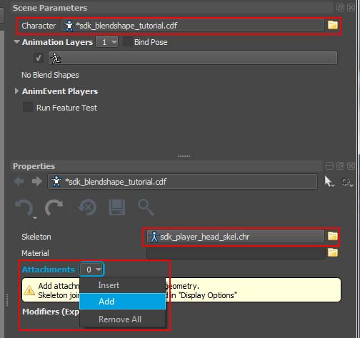
По умолчанию Character Tool добавит «Совместное вложение». Измените его на «Вложение скина» и найдите файл *.CHR, который вы экспортировали ранее.
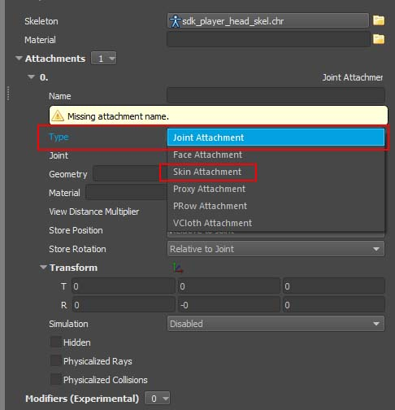
Назначение материала
Это будет текущая конфигурация персонажа. Теперь назначьте экспортированный материал. На последнем шаге мы закрепим черный заштрихованный материал для головы. Это потому, что мы назначили ему шейдер dx11 в Maya, который CRYENGINE не поддерживает.
Активируйте опцию «Программное скинирование», чтобы блендшейпы заработали!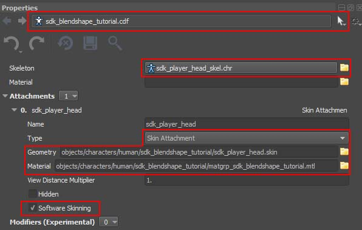
Назначение анимации
В Character Tool отсутствует местоположение анимации (и не только). Это можно сделать с помощью файла *.CHRPARAMS. Чтобы создать новый *.CHRPARAMS для этого персонажа, щелкните поле «Скелет» — это область, отмеченная красным (скриншот выше) и загружаемая с *.CHR.
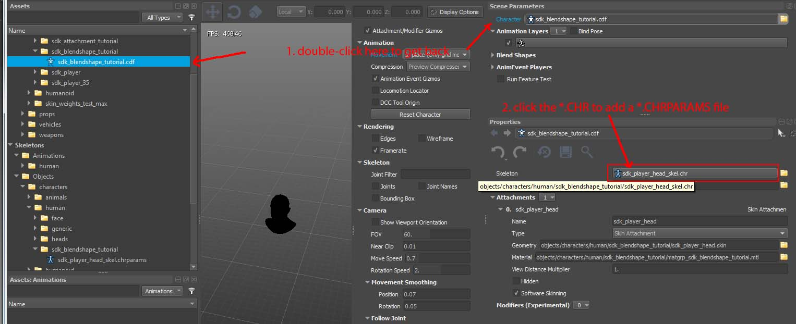
Добавьте «Фильтр набора анимации» и укажите каталог экспортированного файла анимации «default.i_caf». Файл *.I_CAF представляет собой промежуточный формат перед сжатием. При желании вы можете добавить новые «Анимационные события» после этого шага, чтобы избавиться от желтого предупреждающего окна — просто выберите папку анимации *.I_CAF.
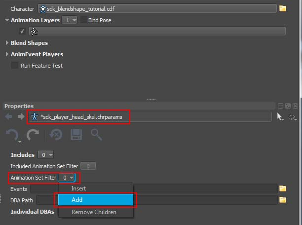
Просмотрите каталог, содержащий файлы *.I_CAF:
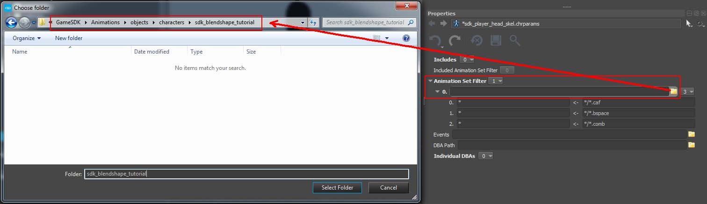
Слева вы найдете связанные анимации со скелетом *.CHR.
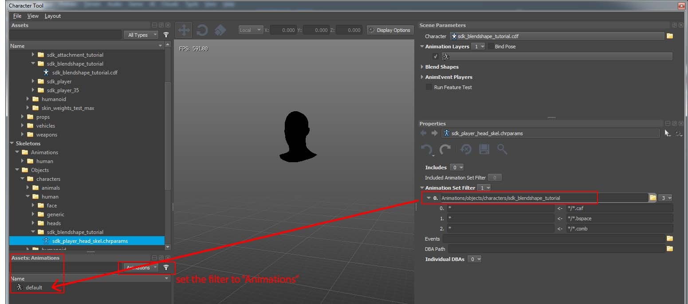
Выберите анимацию «по умолчанию» на левой панели. Теперь вам нужно добавить новый файл *.ANIMSETTINGS и сохранить его:
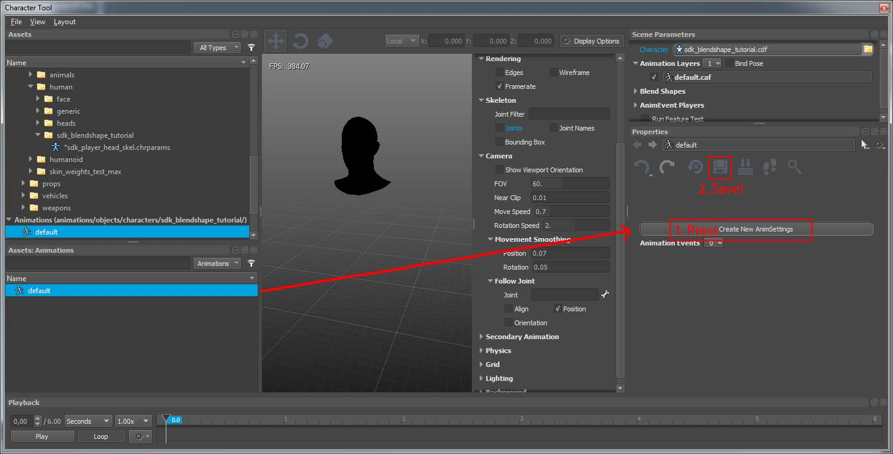
Чтобы Character Tool обновил вашу blendshape-анимацию, перейдите на левую панель и переключитесь, нажав double-LMB на любой существующий *.CDF, а затем вернитесь к созданному вами файлу *.CDF этого урока. (Возможно, вам придется выйти и перезапустить редактор Sandbox, а затем вернуться в Character Tool).
Найдите на левой панели сохраненный персонаж (sdk_blendshape_tutorial.cdf). Выберите и double щелкните анимацию «по умолчанию» в левом нижнем углу (или нажмите пробел). Вы должны увидеть скелетную анимацию сустава головы и шеи AND, а также воспроизводимую анимацию blendshape:
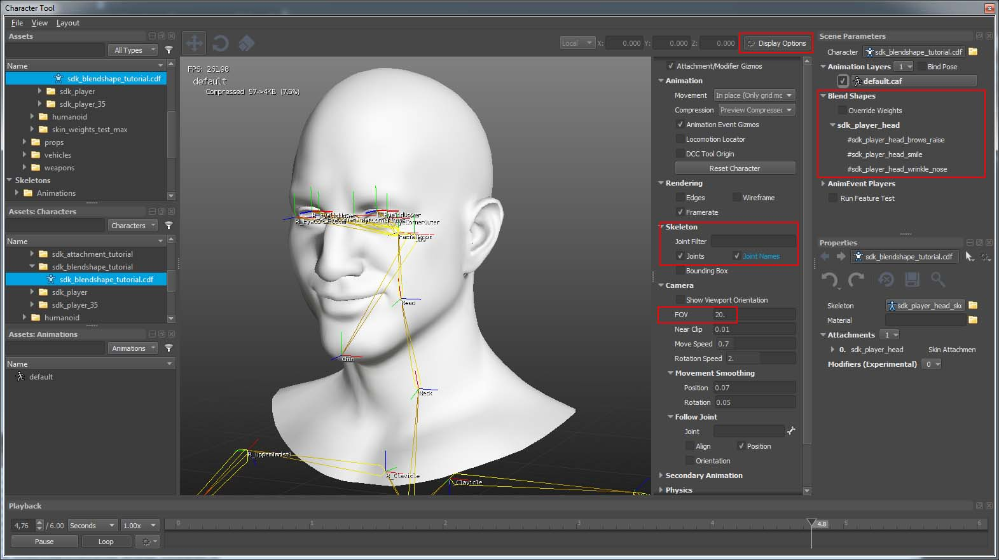
Совет: Проверьте области, отмеченные красным (скриншот выше). Указанные параметры помогут вам проверить созданную вами сцену.
Вы также можете исправить материал "sdk_player_head". Откройте Material Editor в редакторе Sandbox и отредактируйте материал, сделав его более полезным. В окне Character Tool будут обновлены внесенные изменения:
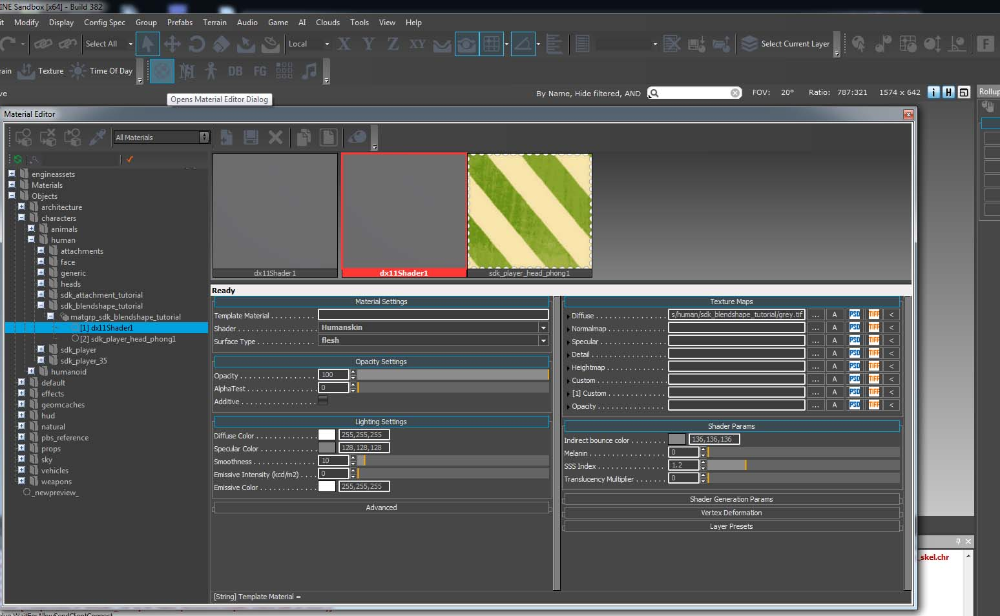
Резюме
В заключение этого руководства приведем список файлов, которые вы создали в Maya и экспортировали в CRYENGINE: (замените имя файла, если вы решили использовать другие имена):
- сохранил файл сцены Maya как файл Maya ASCII перед экспортом
- экспортировал *.SKIN файл: sdk_player_head.skin содержащий модель со скелетом и данными о скинах
- экспортировал *.CHR файл: sdk_player_head_skel.chr содержащий скелетную иерархию
- *.CHR и *.SKIN требует от вас экспорт из кадра позы привязки/дага
- экспортировал *.I_CAF файл: по умолчанию.i_caf содержащий данные анимации
- экспортировал *.MTL файл: sdk_player_head.mtl содержит информацию о материале CE
В CRYENGINE Character Tool вы отредактировали/создали следующие файлы (либо самостоятельно, либо автоматически с помощью CRYENGINE Character Tool):
- По умолчанию SkeletonList.xml в папку "<CRYENGINE_ROOT_FOLDER>\GameSDK\Animations" вы добавили свой новый скелет
- создал *.CDF файл: sdk_player_head_blendshape_tutorial.cdf который определяет анимированный персонаж CRYENGINE
- создал *.CHRPARAMS файл: sdk_player_head_skel.chrparams содержащий местоположение связанной анимации .i_caf/.caf файлы
- создал *.ANIMSETTINGS файл: default.animsettings содержащий степень сжатия вашей анимации
В продолжение этого урока по blendshape мы продолжим настройку карты морщин, которая добавит больше деталей: Урок по картам морщин
Более подробную информацию об анимации blendshape внутри CRYENGINE можно найти ниже — она в основном используется в целях отладки.
CVar двигателя
Общие переменные:
- ca_vaBlendEnable 1/0 — общая переменная переменная для включения/отключения плавных переходов на CPU. по умолчанию: 1
- ca_vaEnable 1/0 — общая переменная переменная для включения/выключения всей вершинной анимации на основе CPU (включая линейное оформление скинов на CPU). по умолчанию: 1
- ca_vaScaleFactor 1 — скаляр множителя, применяемый поверх дельт. по умолчанию: 1
- ca_vaProfile 0/1 — отображает информацию о текущих вершинах перехода. по умолчанию: 0
Смешать CVar отбраковки:
- ca_vaBlendCullingThreshold - чем выше число, тем больше форм смешивания будет отбраковано (в зависимости от того, сколько пикселей они покрывают). по умолчанию: 1.0
- ca_vaBlendCullingDebug 0/1 — установите значение 1, чтобы показать разницу между отсечением смешивания «с» и «без» (путем переключения функции через каждый второй кадр). по умолчанию: 0
- ca_vaBlendPostSkinning 0/1 — выполнять смешивание вершинной анимации после скининга (вместо предварительного скининга). по умолчанию: 0
Касательные обновления
Нежесткая деформация требует обновления касательных для получения правильного затенения. Обновление геометрических касательных в реальном времени обходится дорого, поэтому, чтобы минимизировать стоимость CPU, мы используем цвета вершин для переноса окрашенной в синий цвет (0,0,255) маски внутри Maya, которая отмечает наиболее важные части лица. Бюджет XBox One составлял ~2 тыс. вершин.
Обновления Tangent работают только с 8-ми весовыми скинами и программными скинами (флаги = 8) в файле .cdf.
Чтобы включить/отключить/предварительно просмотреть треугольники, отмеченные маской в ENGINE, используйте следующие переменные CVar:
- ca_vaUpdateTangents 0/1
- ca_debugSWSkinning 3 (для отображения обновляемых треугольников)
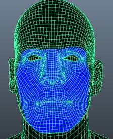